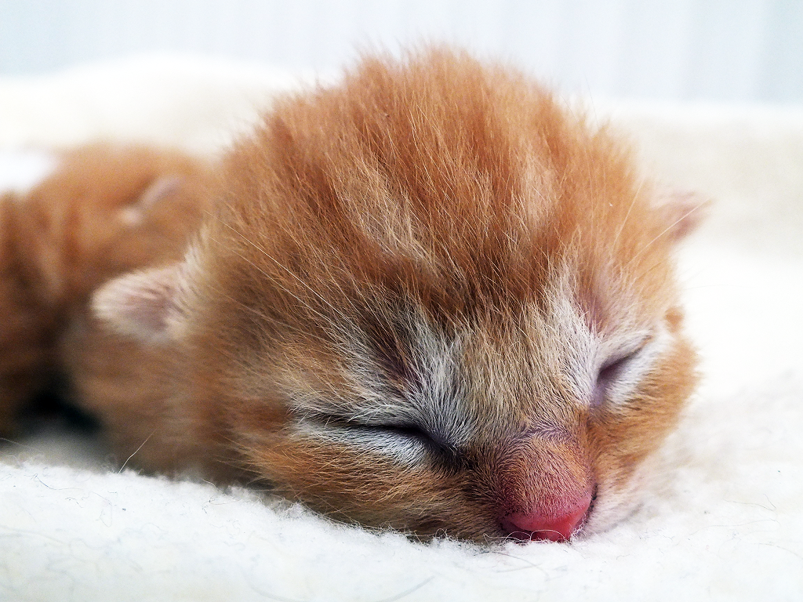

<template>
  <style>
  .kitten-img { width: 50%; }
  </style>
  
</template>
<script id="example1">
  var p4 = Object.create(HTMLElement.prototype);
  p4.createdCallback = function() {
    var template = document.querySelector("template");
    var content = document.importNode(template.content, true);
    var shadow_root = this.createShadowRoot();
    shadow_root.appendChild(content);
  };
  var custom_elem = document.registerElement('x-kitten-4', { prototype: p4 });
</script>
